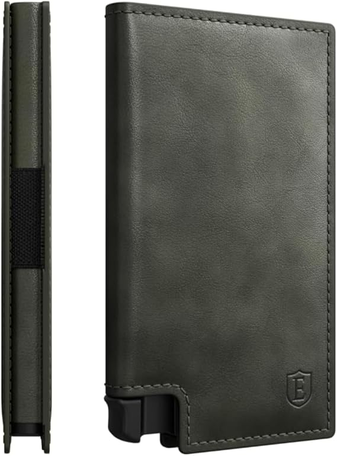
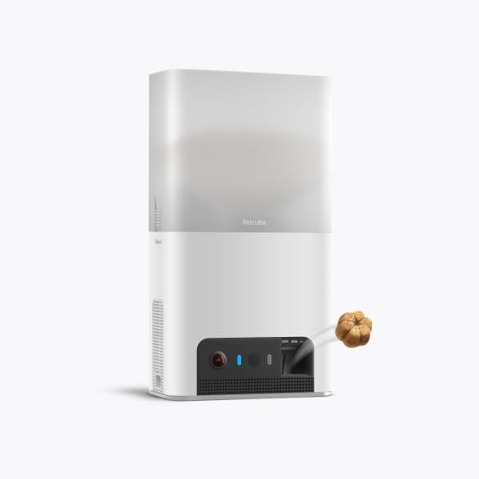
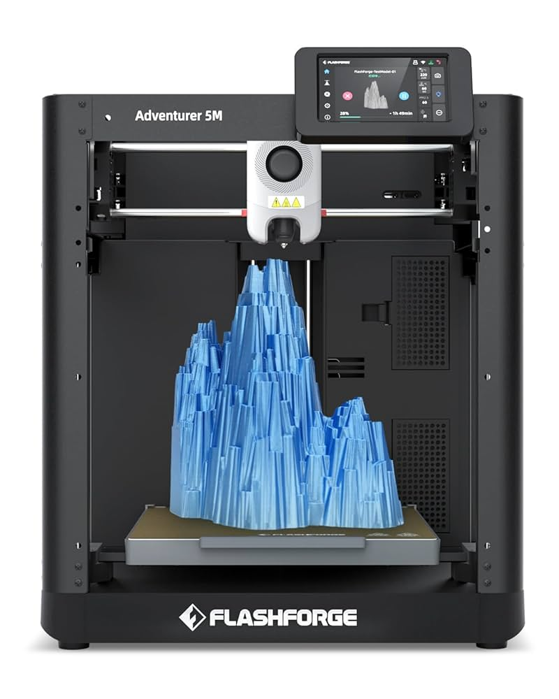

Our Top Products
- This special wallet blocks RFID to make sure all your cards stay safe from electronic pickpockets!
- Buy the slim tracker card in addition to this product and you'll never lose your wallet again!
- This beautiful ultra slim wallet is also made with premium leather!

- This gadget is perfect for all the technophile pet parents who want to keep an eye on their pet with a HD Camera
- It also comes with a app that you can use to throw treats! It can also do this automatically.
- You can also speak through the device, so even while your'e away you can keep your pet calm!

- This 3d printer is perfect for beginners! The set is quick and easy it takes 10 minutes or less and requires no experience!
- Thanks to the Automatic Datum Management (ADM) system you can edit your printing process in real time
- For hassle-free maintenance this product comes with quick-release nozzles for minimal cleaning time. Less time cleaning is more time for you to print!